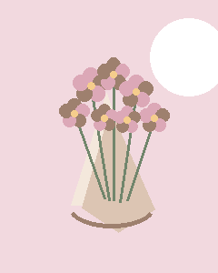
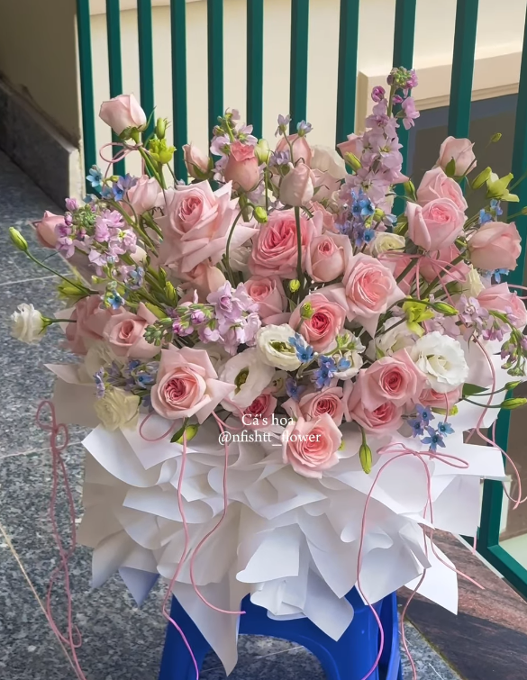

Chọn hoa theo màu sắc và cảm xúc
Tông xanh, hồng, đỏ hay tím tạo nên những sắc thái khác nhau cho món quà.
Đọc bài viếtGóc nhỏ của tiệm
Gợi ý chọn hoa, viết thiệp, chăm hoa và chuẩn bị món quà phù hợp với từng dịp.
Tông xanh, hồng, đỏ hay tím tạo nên những sắc thái khác nhau cho món quà.
Đọc bài viết
Một lời nhắn không cần dài. Điều quan trọng là đúng người, đúng dịp và đúng cảm xúc.
Đọc bài viết
Một vài thao tác nhỏ khi cắm và thay nước giúp hoa giữ được trạng thái đẹp lâu hơn.
Đọc bài viết
Từ người thích tối giản đến người thích nổi bật, mỗi tính cách có thể phù hợp với một kiểu hoa khác nhau.
Đọc bài viết
Bó hoa linh hoạt còn giỏ hoa tiện trưng bày. Hãy chọn theo bối cảnh người nhận.
Đọc bài viết
Không cần quá lớn, một bó hoa có chi tiết gắn với câu chuyện riêng vẫn đủ đặc biệt.
Đọc bài viếtCần một gợi ý riêng?
Gửi cho shop dịp tặng, màu người nhận thích và khoảng ngân sách dự kiến.